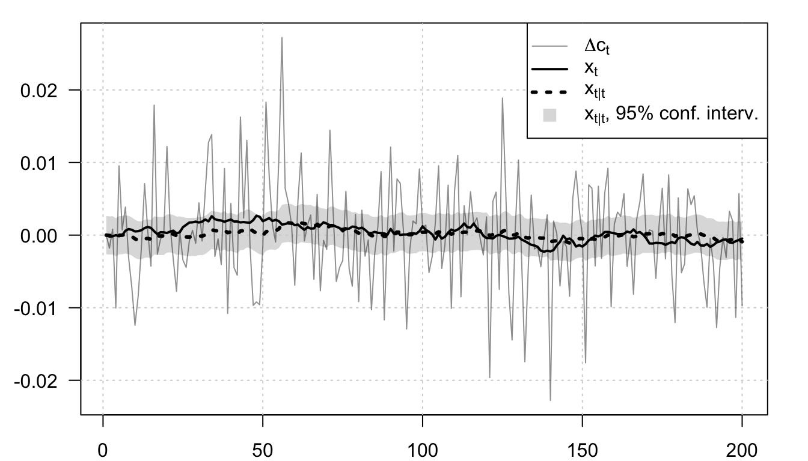
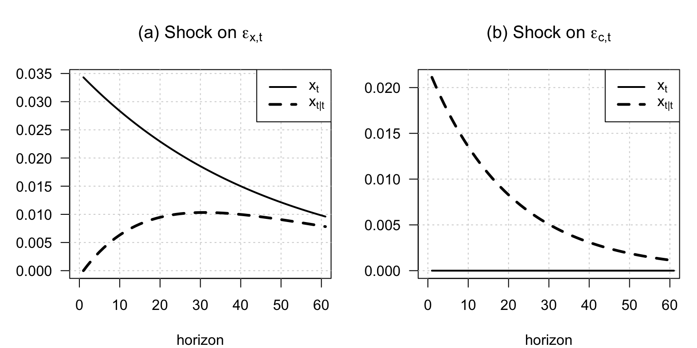
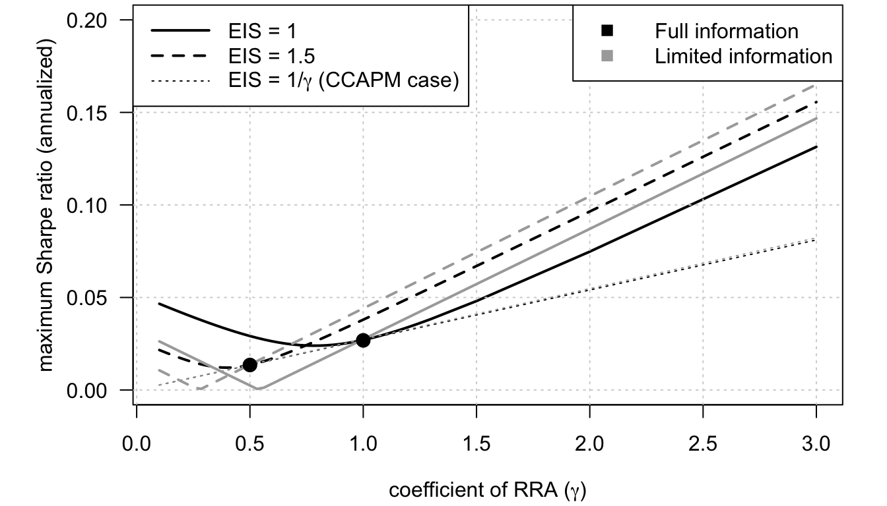
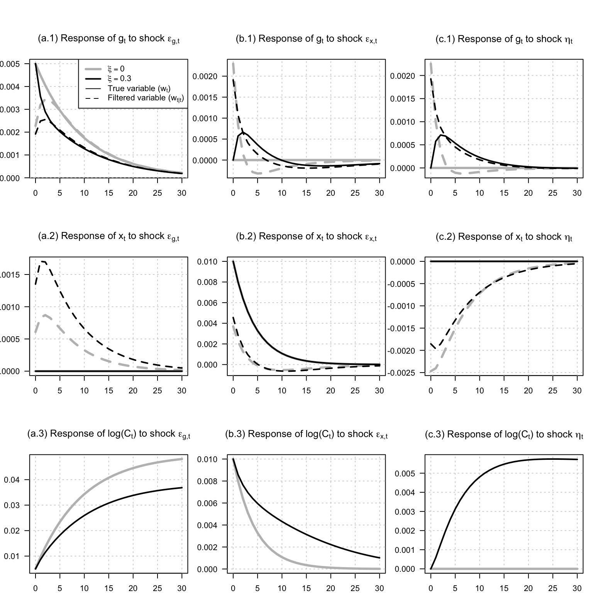
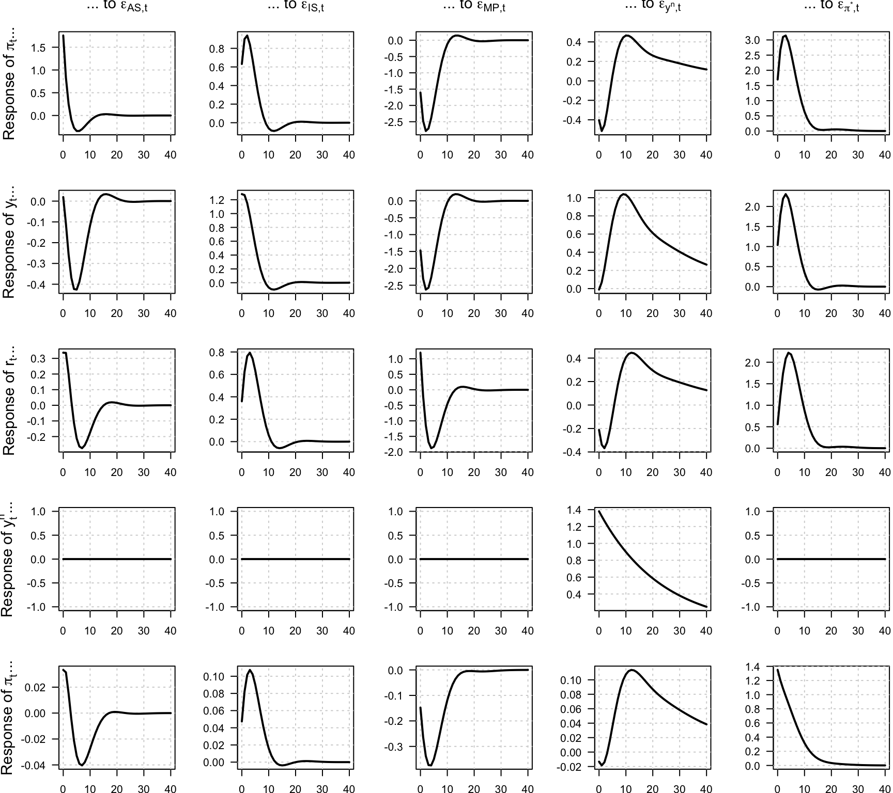
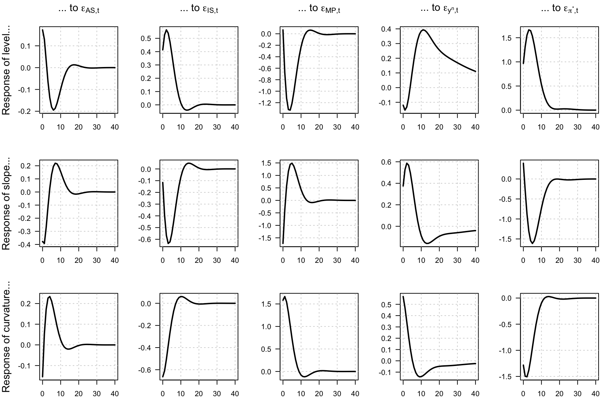
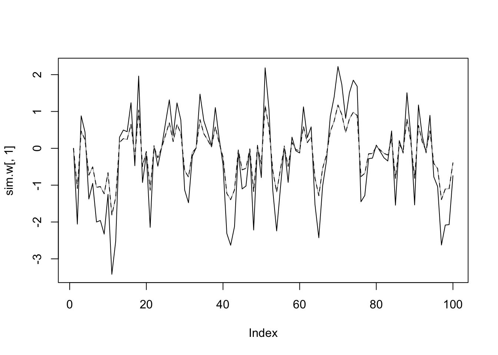
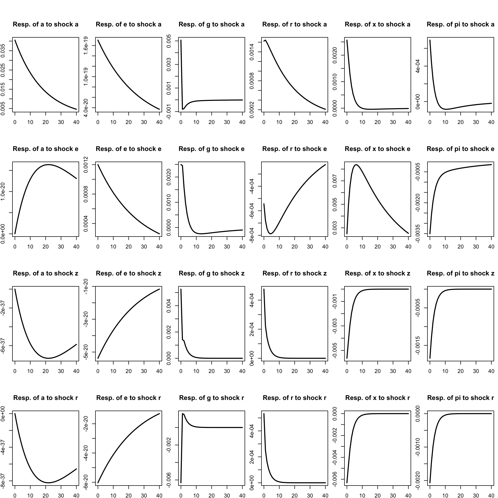
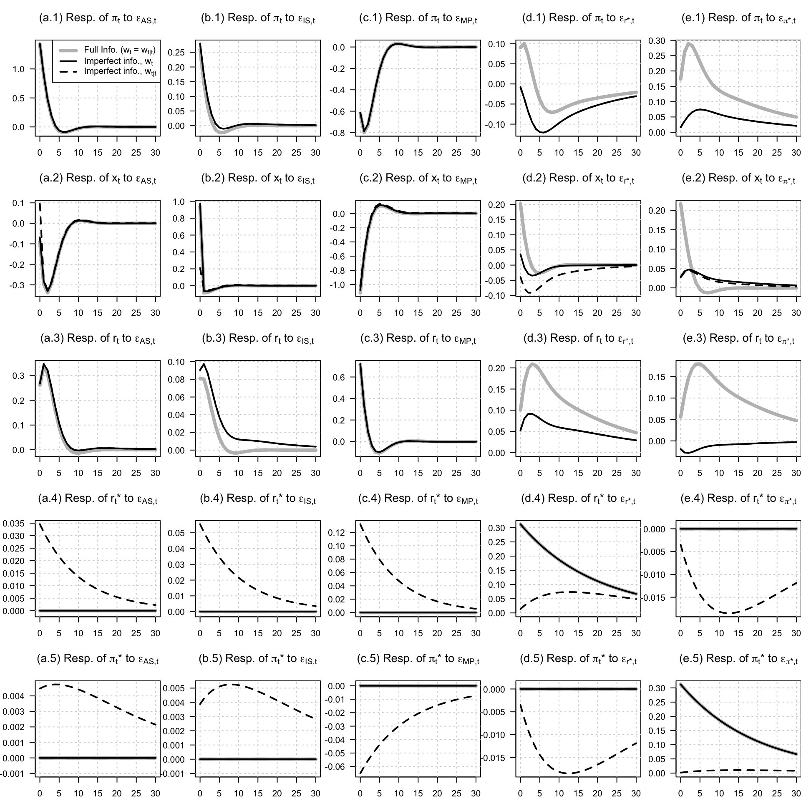

Chapter 16 Imperfect information and rational expectations
16.1 Imperfect information
This example introduces learning dynamics under imperfect information.
# Purpose: This example introduces learning dynamics under imperfect information
library(DTAM)
set.seed(123)
# Bansal and Yaron (2004) specification:
mu_c <- 0 #.0015
phi <- .979
sigma <- 0.0078
varphi_e <- .044
mu <- matrix(c(0,mu_c),2,1)
Phi <- matrix(0,2,2)
Phi[1,1] <- phi
Phi[2,1] <- 1
Sigma12 <- matrix(0,2,2)
Sigma12[1,1] <- varphi_e*sigma
Sigma12[2,2] <- sigma
A <- matrix(c(0,1),1,2)
B <- 0
Omega12 <- 0.0000001
model <- list(mu=mu,Phi=Phi,Sigma12=Sigma12,
A=A,B=B,Omega12=Omega12,
Lambda0=0*Phi,Lambda1=0*Phi)
res <- solve_learning(model = model)
# Should be equivalent given no Lambda0 and Lambda1:
# res <- make_stationary_filter(mu,Phi,Sigma12,A,B,Omega12)
# Check analytical formula:
# p11 <- sigma^2/2*(sqrt((1 - phi^2 - varphi_e^2)^2+4*varphi_e^2) - (1 - phi^2 - varphi_e^2))
# cbind(p11,P[1,1])
# P_check <- matrix(c(p11,0,0,0),2,2)
# Pstar_check <- Phi %*% P_check %*% t(Phi) + Sigma12 %*% t(Sigma12)
model_ww <- list(mu=res$mu_ww,Phi=res$Phi_ww,Sigma12=res$Sigma12_ww)
TT <- 200
ww <- simul_GaussianVAR(model_ww,nb.sim = TT)
dc <- ww[,1:2] %*% t(A)
stdv_w <- sqrt(diag(res$P))
lower_bound <- ww[,3] - 2*stdv_w[1]
upper_bound <- ww[,3] + 2*stdv_w[1]
# Prepare plot:
par(plt=c(.1,.95,.1,.95))
col_dc <- "#11111177"
col_CI <- "#77777744"
col_wt <- "black"
col_wtt <- "black"
plot(dc,col="white",
ylab="",xlab="",
las=1,ylim=c(min(dc),1.0*max(dc)))
polygon(c(1:TT,TT:1),c(lower_bound,rev(upper_bound)),
col=col_CI,border=NaN)
grid()
lines(dc,lwd=1,col=col_dc)
lines(ww[,1],lwd=2,col=col_wt)
lines(ww[,3],lty=3,lwd=3,col=col_wtt)
legend("topright",
c(expression(paste(Delta,c[t],sep="")),
expression(x[t]),
expression(x[t*'|'*t]),
expression(paste(x[t*'|'*t],", 95% conf. interv.",sep=""))),
lwd=c(1,2,3,NaN),
lty=c(1,1,3,NaN),
pch=c(NaN,NaN,NaN,15),
pt.cex=c(NaN,NaN,NaN,1.5),
col=c(col_dc,col_wt,col_wtt,col_CI),
seg.len = 2)
# Compare with KF:
# Y_t <- matrix(dc,ncol=1)
# nu_t <- matrix(0,TT,2)
# H <- Phi
# N <- Sigma12
# mu_t <- matrix(0,TT,1)
# G <- A
# M <- matrix(Omega12)
# Sigma_0 <- diag(2)
# rho_0 <- matrix(0,2,1)
# res_KF <- Kalman_filter(Y_t,nu_t,H,N,mu_t,G,M,Sigma_0,rho_0)
# lines(res_KF$r[,1],col="red",lwd=2,lty=3)This short block computes auxiliary objects used in the imperfect-information examples that follow.
# Purpose: Compute the low-frequency contribution to consumption-growth variance.
# Computation of share of variance of dc accounted for by low-frequency component:
n <- length(model$mu)
Vww <- matrix(solve(diag(4*4) - model_ww$Phi %x% model_ww$Phi) %*%
c(model_ww$Sigma12 %*% t(model_ww$Sigma12)),4,4)
print(Vww[1,1]/Vww[2,2])## [1] 0.0445108616.1.1 Filtered beliefs and true states under imperfect information
This example compares filtered beliefs and true states under imperfect information.
# Purpose: This example compares filtered beliefs and true states under imperfect information
H <- 60 # max horizon
# Prepare IRF in the context of imperfectly observed long-run risk component
Phi_ww <- res$Phi_ww
Sigma_ww <- res$Sigma12_ww
par(mfrow=c(1,2))
par(plt=c(.2,.95,.2,.8))
for(i in 1:2){
x <- matrix(Sigma_ww[,i],ncol=1)
IRF <- x
for(t in 1:H){
x <- Phi_ww %*% x
IRF <- cbind(IRF,x)
}
IRF <- 100*IRF
if(i==1){
main.t <- expression(paste("(a) Shock on ",epsilon[x*','*t],sep=""))
}else{
main.t <- expression(paste("(b) Shock on ",epsilon[c*','*t],sep=""))
}
plot(0:H,IRF[1,],col="white",las=1,
xlab="horizon",ylim=c(0,max(IRF[c(1,3),])),
ylab="",
main=main.t)
grid()
lines(IRF[1,],lwd=2,col=col_wt)
# lines(IRF[2,],lwd=1,col=col_dc)
lines(IRF[3,],lwd=3,col=col_wtt,lty=2)
legend("topright",
c(
# expression(paste(Delta,c[t],sep="")),
expression(x[t]),
expression(x[t*'|'*t])),
lwd=c(2,3),
lty=c(1,2),
col=c(col_wt,col_wtt),
seg.len = 2)
}
16.1.2 Imperfect information in a long-run-risk environment
This example embeds imperfect information in a long-run-risk environment.
# Purpose: This example embeds imperfect information in a long-run-risk environment
library(DTAM)
# ------------------------------------------------------------------------------
# Bansal and Yaron (2004): Homoskedastic case
# (using psi_GaussianVAR() for Laplace transform)
# ------------------------------------------------------------------------------
# Parameterization from Bansal and Yaron (2004):
EIS <- 1.5
gamma <- 10
delta <- .998
mu <- .0015
mu_d <- .0015
phi <- .979
beta <- 3
sigma <- 0.0078
varphi_e <- .044
varphi_d <- 4.5
model_basic <- list(
mu = matrix(c(0,mu,mu_d),3,1),
Phi = matrix(c(phi,1,beta,rep(0,6)),3,3),
Sigma = diag(sigma^2*c(varphi_e,1,varphi_d)^2),
rho = 1/EIS,
phi = phi,
gamma = gamma,
delta = delta,
sigma = sigma,
mu_c0 = 0,
mu_c1 = c(0,1,0),
n_w = 3
)
# all_EIS <- c(.5,.999,1.5,NaN)
all_EIS <- c(1,2,NaN)
all_col <- c("black","black","black","darkgrey","darkgrey","darkgrey")
all_lty <- c(1,2,3,1,2,3)
all_lwd <- c(2,2,1,2,2,1)
all_gamma <- c(seq(.10001,1.3,length.out=40),1.5,2,3)
all_maxSR <- matrix(0,2*length(all_EIS),length(all_gamma))
count_EIS <- 0
for(std_mesurement_noise in c(.0000001,100)){
# Modify model to take into account imperfect observation ----------------------
Omega12 <- diag(c(.0000001,std_mesurement_noise))
Omega <- Omega12 %*% t(Omega12)
A <- matrix(c(model_basic$mu_c1,c(1,0,0)),nrow=2,byrow = TRUE)
B <- c(model_basic$mu_c0,0)
VAR_ImperfectInfo <-
make_stationary_filter(model_basic$mu,
model_basic$Phi,
t(chol(model_basic$Sigma)),A,B,Omega12,nb_iter = 200)
P <- VAR_ImperfectInfo$P
Pstar <- VAR_ImperfectInfo$Pstar
K <- VAR_ImperfectInfo$K
Sigma_wtt <- K %*% (A %*% Pstar %*% t(A) + Omega) %*% t(K)
model <- model_basic
model$Sigma <- Sigma_wtt
# ------------------------------------------------------------------------------
model_solved <- solve_EZ_SDF(model,psi_GaussianVAR,z_bar_ini=1,
nb_loop_z_bar = 20,nb_loop_mu_z1 = 20)
# Check formula (compare with analytical BY formula):
# A1 <- (1 - 1/EIS)/(1 - model_solved$kappa1*model$phi)
for(EIS in all_EIS){
count_EIS <- count_EIS + 1
count_gamma <- 0
model$rho <- 1/EIS
for(gamma in all_gamma){
count_gamma <- count_gamma + 1
model$gamma <- gamma
if(is.na(EIS)){
model$rho <- model$gamma
}
if((!is.na(EIS))&(EIS==1)){
res <- solve_EZ_UnitEIS(model,psi = psi_GaussianVAR,Phi = model$Phi)
}
if((!is.na(EIS))&(EIS!=1)){
res <- solve_EZ_SDF(model,psi_GaussianVAR,z_bar_ini=5,
nb_loop_z_bar = 20,nb_loop_mu_z1 = 20)
}
if(is.na(EIS)){
res <- solve_CRRA(model,psi_GaussianVAR)
}
psi_w_2alpha <- psi_GaussianVAR(2*res$alpha,model)
psi_w_alpha <- psi_GaussianVAR(res$alpha,model)
w <- res$Ew
maxSR <- sqrt(exp(t(psi_w_2alpha$a - 2*psi_w_alpha$a) %*% w +
psi_w_2alpha$b - 2*psi_w_alpha$b)-1)
all_maxSR[count_EIS,count_gamma] <- maxSR*sqrt(12)
}
}
}
par(plt=c(.15,.95,.2,.99))
plot(all_gamma,(all_maxSR[1,]),ylim=c(0,.2),type="l",
lwd=all_lwd[1],las=1,col=all_col[1],lty=all_lty[1],
xlab=expression(paste("coefficient of RRA (",gamma,")",sep="")),
ylab="maximum Sharpe ratio (annualized)")
grid()
for(i in 2:dim(all_maxSR)[1]){
lines(all_gamma,(all_maxSR[i,]),lwd=all_lwd[i],
col=all_col[i],lty=all_lty[i])
}
for(i in 1:(length(all_EIS)-1)){
j <- which.min(abs(all_gamma - 1/all_EIS[i]))
y <- all_maxSR[length(all_EIS),j]
points(1/all_EIS[i],y,pch=19,cex=1.4)
}
legend("topleft",
c(expression(paste("EIS = 1",sep="")),
expression(paste("EIS = 1.5",sep="")),
expression(paste("EIS = 1/",gamma," (CCAPM case)",sep=""))),
lwd=all_lwd,
lty=all_lty,
col=all_col,
seg.len = 3
)
legend("topright",
c(expression(paste("Full information",sep="")),
expression(paste("Limited information",sep=""))),
lwd=2,
pch=15,pt.cex = 1.2,
lty=c(NaN,NaN),
col=c("black","darkgrey"),
seg.len = 3
)
16.1.3 How optimistic beliefs affect asset prices and macro dynamics
This example studies how optimistic beliefs affect asset prices and macro dynamics.
# Purpose: This example studies how optimistic beliefs affect asset prices and macro dynamics
library(DTAM)
max_h <- 30
# ------------------------------------------------------------------------------
# Parameter values (set yours here)
# ------------------------------------------------------------------------------
phi <- 0.8 # persistence of output gap
sigma_x <- 0.01
rho <- 0.9
xi <- 0.4
mu_g <- 0.02
sigma_g <- 0.005
sigma_nu <- 0.01
all_xi <- c(0,.3)
col_xi <- c("grey","black")
lwd_xi <- c(3,2)
types_info <- c(1,2)
# ------------------------------------------------------------------------------
# State-space objects
# ------------------------------------------------------------------------------
# State vector w_t = (g_t, x_t, x_{t-1})'
n <- 3
names_var <- c(expression(g[t]),
expression(x[t]),
expression(paste("log(",C[t],")",sep="")))
names_shock <- c(
expression(epsilon[g*','*t]),
expression(epsilon[x*','*t]),
expression(eta[t])
)
nb_var <- length(names_var)-1
nb_shocks <- length(names_shock)
all_IRFs <- array(NaN,c(2*n,1+max_h,nb_shocks,length(all_xi)))
count_xi <- 0
for(xi in all_xi){
count_xi <- count_xi + 1
# Lambda_0 = 0
Lambda0 <- matrix(0, nrow = n, ncol = n)
# Lambda_1
Lambda1 <- matrix(0, nrow = n, ncol = n)
Lambda1[1,1] <- xi # feedback from g_{t-1|t-1}
# mu vector
mu <- matrix(c((1 - rho)*mu_g, 0, 0), ncol = 1)
# Phi matrix
Phi <- matrix(c(
rho - xi, 0, 0,
0, phi, 0,
0, 1, 0
), nrow = n, byrow = TRUE)
# Sigma^(1/2)
Sigma12 <- matrix(c(
sigma_g, 0,
0, sigma_x,
0, 0), nrow = n, byrow = TRUE)
# Full Sigma (if needed)
Sigma <- Sigma12 %*% t(Sigma12)
# ------------------------------------------------------------------------------
# Measurement equation y_t = B + A w_t + Omega^(1/2) eta_t
# ------------------------------------------------------------------------------
A <- t(matrix(c(1, 1, -1,
1, 0, 0),n,2)) # Δc_t = g_t + x_t - x_{t-1}
B <- matrix(0,2,1)
Omega12 <- matrix(c(0,sigma_nu),2,1)
Omega <- Omega12^2
# ------------------------------------------------------------------------------
# Bundle into a model list (optional)
# ------------------------------------------------------------------------------
model <- list(
phi = phi,
rho = rho,
xi = xi,
mu_g = mu_g,
sigma_x = sigma_x,
sigma_g = sigma_g,
Lambda0 = Lambda0,
Lambda1 = Lambda1,
mu = mu,
Phi = Phi,
Sigma12 = Sigma12,
Sigma = Sigma,
A = A,
B = B,
Omega12 = Omega12,
Omega = Omega
)
res <- solve_learning(model)
# res <- make_stationary_filter(model$mu,model$Phi,model$Sigma12,
# model$A,model$B,model$Omega12)
for(shock in 1:nb_shocks){
x <- c(res$Sigma12_ww[,shock])
allx <- matrix(x,length(x),1)
for(t in 1:max_h){
x <- res$Phi_ww %*% x
allx <- cbind(allx,x)
}
all_IRFs[,,shock,count_xi] <- allx
}
}
par(plt=c(.15,.95,.1,.7))
par(mfrow=c(nb_var+1,nb_shocks))
for(i_variable in 1:(nb_var+1)){
for(i_shock in 1:nb_shocks){
if(i_variable<=nb_var){
main.t <- bquote("(" * .(letters[i_shock]) * "." * .(i_variable) * ") "
* "Response of " * .(names_var[[i_variable]])
* " to shock " * .(names_shock[[i_shock]]))
plot(0:max_h,rep(0,max_h+1),
xlab="time after shock",ylab="",
type="l",lwd=2,las=1,col="white",
ylim=c(min(all_IRFs[i_variable,,i_shock,],
all_IRFs[n+i_variable,,i_shock,]),
max(all_IRFs[i_variable,,i_shock,],
all_IRFs[n+i_variable,,i_shock,])),
main=main.t)
grid()
for(i_xi in 1:length(all_xi)){
lines(0:max_h,all_IRFs[i_variable,,i_shock,i_xi],
lty=types_info[1],
lwd=lwd_xi[i_xi],
col=col_xi[i_xi])
lines(0:max_h,all_IRFs[n+i_variable,,i_shock,i_xi],
lwd=lwd_xi[i_xi],
lty=types_info[2],
col=col_xi[i_xi])
}
}else{
# Add effect on cumulated consumption
vector <- matrix(c(1,1,-1,0,0,0),nrow=1)
dc_xi1 <- vector %*% all_IRFs[,,i_shock,1]
dc_xi2 <- vector %*% all_IRFs[,,i_shock,2]
cum_dc_xi1 <- cumsum(dc_xi1)
cum_dc_xi2 <- cumsum(dc_xi2)
main.t <- bquote("(" * .(letters[i_shock]) * "." * .(i_variable) * ") "
* "Response of " * .(names_var[[i_variable]])
* " to shock " * .(names_shock[[i_shock]]))
plot(0:max_h,rep(0,max_h+1),
xlab="time after shock",ylab="",
type="l",lwd=2,las=1,col="white",
ylim=c(min(cum_dc_xi1,cum_dc_xi2),
max(cum_dc_xi1,cum_dc_xi2)),
main=main.t)
grid()
lines(0:max_h,cum_dc_xi1,
lty=1,
lwd=lwd_xi[1],
col=col_xi[1])
lines(0:max_h,cum_dc_xi2,
lty=1,
lwd=lwd_xi[2],
col=col_xi[2])
}
legend_labels <- sapply(all_xi, function(x)
bquote(xi == .(round(x, 2))))
if((i_shock==1)&(i_variable==1)){
legend("topright",
legend = c(legend_labels,
expression(paste("True variable (",w[t],")",sep="")),
expression(paste("Filtered variable (",w[t*'|'*t],")",sep=""))),
lwd=c(lwd_xi,1,1),
lty=c(1,1,types_info),
col=c(col_xi,"black","black"),
seg.len = 2)
}
}
}
16.2 Rational Expectations
This example presents the benchmark BCM imperfect-information term-structure model.
# Purpose: This example presents the benchmark BCM imperfect-information term-structure model
# Model of Bekaert, Cho, and Moreno (2010, JMCB): ------------------------------
# Parameter values from Table 1
zeta <- 0.611 # δ in BCM
kappa <- 0.064 # κ
gamma <- 3.156 # utility curvature
mu <- 0.424 # µ
rho <- 0.723 # ρ (policy smoothing)
beta_pi<- 1.525 # β (in policy rule, response to inflation)
beta_y <- 0.001 # β (in policy rule, response to ygap)
phi_yn <- 0.958
omega <- 0.877 # ω
phi <- 0.134
phi_1 <- 0.500 # φ₁
phi_2 <- 0.470 # φ₂
phi_3 <- 0.010 #1 - phi_1 - phi_2 # φ₃ = 1−φ₁−φ₂ ≈ 0.008
sigma_AS <- 1.249/100
sigma_IS <- 0.671/100
sigma_MP <- 2.177/100
sigma_yn <- 1.380/100
sigma_pistar <- 0.730/100
alpha_IS <- 0.01
r_bar <- .03
alpha_MP <- (1-rho)*r_bar
n <- 5
# Build matrices
Gamma0 <- matrix(0, 5, 5)
Gamma0[1, ] <- c(1, -kappa, 0, kappa, 0)
Gamma0[2, ] <- c(0, 1, phi, 0, 0)
Gamma0[3, ] <- c(0, -(1-rho)*beta_y, 1, (1-rho)*beta_y, (1-rho)*beta_pi)
Gamma0[4, ] <- c(0, 0, 0, 1, 0)
Gamma0[5, ] <- c(-phi_3, 0, 0, 0, 1)
Gamma1 <- matrix(0, 5, 5)
Gamma1[1,1] <- 1 - zeta
Gamma1[2,2] <- 1 - mu
Gamma1[3,3] <- rho
Gamma1[4,4] <- phi_yn # your varphi_{y^n}
Gamma1[5,5] <- phi_2
C <- matrix(c(0, alpha_IS, alpha_MP, 0, 0), 5, 1)
Psi0 <- matrix(0, 5, 5)
Psi0[1,1] <- zeta
Psi0[2,1] <- phi
Psi0[2,2] <- mu
Psi0[3,1] <- (1-rho)*beta_pi
Psi0[5,5] <- phi_1
Psi1 <- 0*Psi0
Pi <- diag(c(sigma_AS, sigma_IS, sigma_MP, sigma_yn, sigma_pistar))
# Solve
# Your solver:
model <- list(mu = solve(Gamma0) %*% C,
Phi = solve(Gamma0) %*% Gamma1,
Psi0 = solve(Gamma0) %*% Psi0,
Psi1 = solve(Gamma0) %*% Psi1,
Sigma12 = solve(Gamma0) %*% Pi)
res <- solve_RE(model)
# Unconditional mean of w:
Ew <- solve(diag(n) - res$Phi_tilde) %*% res$mu_tilde
# Prepare IRFs: -----------
max_h <- 40
nb_shocks <- dim(Pi)[2]
par(mfrow=c(n,nb_shocks))
par(plt=c(.33,.98,.15,.8))
names_var <- c(expression(pi[t]),
expression(y[t]),
expression(r[t]),
expression(y[t]^n),
expression(pi[t]^'*'))
names_shock <- c(expression(epsilon[AS*','*t]),
expression(epsilon[IS*','*t]),
expression(epsilon[MP*','*t]),
expression(epsilon[y^n*','*t]),
expression(epsilon[pi^"*"*','*t]))
ylab_IRF <- function(i_var){
bquote("Response of " * .(names_var[[i_var]]) * "...")
}
title_IRF <- function(i_shock) {
bquote("... to " * .(names_shock[[i_shock]]))
}
for(shock in 1:nb_shocks){
x <- c(res$Sigma12_tilde[,shock])
allx <- matrix(x,n,1)
for(t in 1:max_h){
x <- res$Phi_tilde %*% x
allx <- cbind(allx,x)
}
for(i in 1:n){
par(mfg=c(i,shock))
ylab_val <- if (shock == 1) ylab_IRF(i) else ""
main_val <- if (i == 1) title_IRF(shock) else ""
plot(0:max_h,100*allx[i,],type="l",lwd=2,las=1,col="white",
xlab="",ylab=ylab_val,main=main_val,
cex.lab = 1.4,cex.main=1.4)
grid()
lines(0:max_h,100*allx[i,],lwd=2)
}
}
16.2.1 Additional implications of the BCM imperfect-information model
This example reports additional implications of the BCM imperfect-information model.
# Purpose: This example reports additional implications of the BCM imperfect-information model
# Build the risk-neutral dynamics implied by the SDF loading.
lambda0 <- solve(res$Sigma12_tilde) %*%
matrix(c(0, sigma_IS/phi, 0, 0, 0), n, 1) -
matrix(c(1, gamma, 0, 0, 0), n, 1)
model_P <- list(mu = res$mu_tilde,
Phi = res$Phi_tilde,
Sigma = res$Sigma12_tilde %*% t(res$Sigma12_tilde))
model_Q <- model_P
model_Q$mu <- res$mu_tilde + res$Sigma12_tilde %*% lambda0
resAB <- compute_AB_classical(xi0=0,xi1=matrix(c(0,0,1,0,0),n,1),
H=40, # maximum maturity
psi=psi_GaussianVAR,
psi.parameterization=model_Q)
# Compute level, slope, and curvature loadings.
loadings <- matrix(NaN,3,n)
loadings[1,] <- resAB$a[,1,c(1,4,20)] %*% matrix(rep(1/3,3),3,1)
loadings[2,] <- resAB$a[,1,20] - resAB$a[,1,1]
loadings[3,] <- resAB$a[,1,20] + resAB$a[,1,1] - 2*resAB$a[,1,4]
names_var <- c(expression(paste("level",sep="")),
expression(paste("slope",sep="")),
expression(paste("curvature",sep="")))
ylab_IRF <- function(i_var){
bquote("Response of " * .(names_var[[i_var]]) * "...")
}
title_IRF <- function(i_shock) {
bquote("... to " * .(names_shock[[i_shock]]))
}
par(mfrow=c(length(names_var),nb_shocks))
par(plt=c(.33,.98,.15,.8))
# Plot impulse responses of yield-curve factors to each structural shock.
for(shock in 1:nb_shocks){
x <- c(res$Sigma12_tilde[,shock])
allx <- matrix(x,n,1)
for(t in 1:max_h){
x <- res$Phi_tilde %*% x
allx <- cbind(allx,x)
}
allx <- loadings %*% allx
for(i in 1:dim(allx)[1]){
par(mfg=c(i,shock))
ylab_val <- if (shock == 1) ylab_IRF(i) else ""
main_val <- if (i == 1) title_IRF(shock) else ""
plot(0:max_h,100*allx[i,],type="l",lwd=2,las=1,col="white",
xlab="",ylab=ylab_val,main=main_val,
cex.lab = 1.4,cex.main=1.4)
grid()
lines(0:max_h,100*allx[i,],lwd=2)
}
}
16.2.2 Rational Expectation framework with longer horizon
We consider a system in which the \(n\)–dimensional state vector \(\mathbf{w}_t\) evolves according to \[ \mathbf{w}_t = \boldsymbol\mu + \boldsymbol\Phi\,\mathbf{w}_{t-1} + \boldsymbol\Psi_0\,\mathbb{E}(\mathbf{w}_{t+2}\mid\underline{\mathbf{w}_t}) + \boldsymbol\xi_t, \qquad \boldsymbol\xi_t \sim i.i.d.\;\mathcal{N}(\mathbf{0},\boldsymbol\Sigma_\xi). \]
There are no one–period–ahead expectations and no contemporaneous expectational terms: \[ \boldsymbol\Psi_1 = \mathbf{0}, \qquad \mathbb{E}(\mathbf{w}_{t+1}\mid\underline{\mathbf{w}_t}) \text{ does not enter the equation.} \]
To cast the problem into the standard first-order form, we introduce the auxiliary forward-looking variable \[ \widetilde{\mathbf{w}}_t = \mathbb{E}(\mathbf{w}_{t+1}\mid\underline{\mathbf{w}_t}), \] and define the augmented state vector \[ \mathbf{W}_t = (\mathbf{w}_t',\,\widetilde{\mathbf{w}}_t')'. \]
Using the law of iterated expectations, \[ \mathbb{E}(\widetilde{\mathbf{w}}_{t+1}\mid\underline{\mathbf{w}_t}) = \mathbb{E}(\mathbf{w}_{t+2}\mid\underline{\mathbf{w}_t}), \] the system becomes \[ \mathbf{W}_t = \begin{pmatrix} \boldsymbol\mu \\ \mathbf{0} \end{pmatrix} + \begin{pmatrix} \boldsymbol\Phi & \mathbf{0} \\ \mathbf{0} & \mathbf{0} \end{pmatrix} \mathbf{W}_{t-1} + \begin{pmatrix} \mathbf{0} & \boldsymbol\Psi_0 \\ \mathbf{Id}_n & \mathbf{0} \end{pmatrix} \mathbb{E}(\mathbf{W}_{t+1}\mid\underline{\mathbf{W}_t}) + \begin{pmatrix} \boldsymbol\xi_t \\ \mathbf{0} \end{pmatrix}. \]
This representation has a standard structure involving conditional expectations involving a single horizon.
This block computes a two-period-ahead rational-expectations benchmark for comparison.
# Purpose: Build the two-period-ahead rational-expectations benchmark.
# ==========================
# Original model dimensions
# ==========================
n <- 2 # dimension of w_t
mu <- matrix(c(0,0), n, 1)
Phi <- matrix(c(0.5,0.1,
0.0,0.6), n, n)
Psi0 <- matrix(c(0.2,0,
0, 0.1), n, n)
Sigma12 <- diag(n)
# ==========================
# Augment the system
# ==========================
# Augmented state dimension: 2n
N <- 2 * n
# Augmented mũ
mu_tilde <- rbind(mu, matrix(0, n, 1))
# Augmented Phĩ
Phi_tilde <- rbind(
cbind(Phi, matrix(0, n, n)),
cbind(matrix(0, n, n), matrix(0, n, n))
)
# Augmented Ψ̃0
Psi0_tilde <- rbind(
cbind(matrix(0, n, n), Psi0),
cbind(diag(n), matrix(0, n, n))
)
# No Ψ1 term
Psi1_tilde <- matrix(0, N, N)
# Shock matrix Σ̃½ = [Σ½; 0]
Sigma12_tilde <- rbind(Sigma12, matrix(0, n, n))
# Build model list for solve_RE
model_aug <- list(
mu = mu_tilde,
Phi = Phi_tilde,
Psi0 = Psi0_tilde,
Psi1 = Psi1_tilde,
Sigma12 = Sigma12_tilde
)
# Solve
sol <- solve_RE(model_aug)
# Check
sim.w <- simul_GaussianVAR(sol,nb.sim=100)
E.w <- sim.w %*% t(sol$Phi_tilde)
plot(sim.w[,1],type="l")
lines(sim.w[,3],col="darkgrey")
lines(E.w[,1],col="black",lty=2)
16.2.3 The imperfect-information framework to an Ireland-style New Keynesian model
This example applies the imperfect-information framework to an Ireland-style New Keynesian model.
# Purpose: This example applies the imperfect-information framework to an Ireland-style New
# Keynesian model
# Ireland (2004) --------------------------------------------------------------
library(geigen)
library(DTAM)
# R code for Ireland (2004) system:
# w_t = (a_t, e_t, g_t, r_t, x_t, pi_t)'
# Γ0 w_t = Γ1 w_{t-1} + Ψ0 E_t w_{t+1} + Π ε_t
# Parameters (symbolic placeholders) -------------------------------------------
rho_a <- 0.9470
rho_e <- 0.9625
rho_g <- 0.2536
rho_x <- 0.0347
rho_pi <- 0.3597
omega <- 0.0617
alpha_x <- 0.0836
alpha_pi <- 0.0000
psi <- 0.1
beta <- 0.99
sigma_a <- 0.0405
sigma_e <- 0.0012
sigma_z <- 0.0109
sigma_r <- 0.0031
# --------- BUILD MATRICES ------------------------------------------------------------
n <- 6
Gamma0 <- matrix(0, n, n)
Gamma0[1, ] <- c(1, 0, 0, 0, 0, 0)
Gamma0[2, ] <- c(0, 1, 0, 0, 0, 0)
Gamma0[3, ] <- c(-omega, 0, 1, 0, -1, 0)
Gamma0[4, ] <- c(0, 0, -rho_g, 1, -rho_x, -rho_pi)
Gamma0[5, ] <- c(-(1-omega)*(1-rho_a), 0, 0, 1, 1, 0)
Gamma0[6, ] <- c(0, 1, 0, 0, -psi, 1)
Gamma1 <- matrix(0, n, n)
Gamma1[1, ] <- c(rho_a, 0, 0, 0, 0, 0)
Gamma1[2, ] <- c(0, rho_e, 0, 0, 0, 0)
Gamma1[3, ] <- c(-omega, 0, 0, 0, -1, 0)
Gamma1[4, ] <- c(0, 0, 0, 1, 0, 0)
Gamma1[5, ] <- c(0, 0, 0, 0, alpha_x, 0)
Gamma1[6, ] <- c(0, 0, 0, 0, 0, beta*alpha_pi)
Psi0 <- matrix(0, n, n)
Psi0[5, ] <- c(0, 0, 0, 0, (1-alpha_x), 1)
Psi0[6, ] <- c(0, 0, 0, 0, 0, beta*(1-alpha_pi))
Psi1 <- 0*Psi0
Pi <- matrix(0, n, 4)
Pi[1,1] <- sigma_a
Pi[2,2] <- sigma_e
Pi[3,3] <- sigma_z
Pi[4,4] <- sigma_r
# rows 5–6 remain zero
C <- matrix(0, 6, 1)
# Return as list
model_matrices <- list(
Gamma0 = Gamma0,
Gamma1 = Gamma1,
Psi0 = Psi0,
C = C,
Pi = Pi
)
# Solve
# Your solver:
model <- list(mu = solve(Gamma0) %*% C,
Phi = solve(Gamma0) %*% Gamma1,
Psi0 = solve(Gamma0) %*% Psi0,
Psi1 = solve(Gamma0) %*% Psi1,
Sigma12 = solve(Gamma0) %*% Pi)
res <- solve_RE(model)
# Prepare IRFs:
# Check
# Gamma0 %*% res$Phi_tilde - Gamma1 - Psi0 %*% res$Phi_tilde %*% res$Phi_tilde
max_h <- 40
nb_shocks <- dim(Pi)[2]
par(mfrow=c(nb_shocks,n))
par(plt=c(.15,.95,.1,.7))
names_var <- c("a","e","g","r","x","pi")
names_shock <- c("a","e","z","r")
for(shock in 1:nb_shocks){
x <- c(res$Sigma12_tilde[,shock])
allx <- matrix(x,n,1)
for(t in 1:max_h){
x <- res$Phi_tilde %*% x
allx <- cbind(allx,x)
}
for(i in 1:n){
plot(0:max_h,allx[i,],type="l",lwd=2,
main=paste("Resp. of ",names_var[i],
" to shock ",names_shock[shock],sep=""))
}
}
16.3 Imperfect information and rational expectations
This example studies another imperfect-information New Keynesian specification and its term-structure implications.
# Purpose: This example studies another imperfect-information New Keynesian specification and
# its term-structure implications
library(DTAM)
max_h <- 30
col_info <- c("grey","black")
lwd_info <- c(4,2)
types_t_or_tt <- c(1,2)
# --- Parameters ------------------------------------------------------------
zeta <- .5
kappa <- .2 # κ
gamma <- 3 # γ
rho <- .8 # ρ
phi_x <- .2 # φ_x
phi_pi <- 1.5 # φ_π
rho_rstar <- .95 # ρ_r_star
rho_pistar <- .95 # ρ_pi_star
rbar_star <- .02 # r_bar_star
pibar_star <- .02 # pi_bar_star
sigma_AS <- .01 # σ_AS
sigma_IS <- .01 # σ_IS
sigma_MP <- .01 # σ_MP
sigma_rstar <- .01 * sqrt(1-rho_rstar^2) # σ_r_star
sigma_pistar <- .01 * sqrt(1-rho_pistar^2) # σ_pi_star
sigma_nu <- .02
# --- Define Θ ------------------------------------------------------------
Theta <- rbind(
c(1, -kappa, 0, 0, 0),
c(0, 1, 1/gamma, -1/gamma, 0),
c(0, -(1-rho)*phi_x, 1, -(1-rho), -(1-rho)*(1-phi_pi)),
c(0, 0, 0, 1, 0),
c(0, 0, 0, 0, 1)
)
Theta_inv <- solve(Theta)
# --- μ ------------------------------------------------------------
mu_vec <- c(0,
0,
0,
(1 - rho_rstar) * rbar_star,
(1 - rho_pistar) * pibar_star)
mu <- Theta_inv %*% matrix(mu_vec, ncol = 1)
# --- Φ ------------------------------------------------------------
Phi_raw <- rbind(
c(zeta,0,0,0,0),
c(0,0,0,0,0),
c(0,0,rho,0,0),
c(0,0,0,rho_rstar,0),
c(0,0,0,0,rho_pistar)
)
Phi <- Theta_inv %*% Phi_raw
# --- Γ₀ ------------------------------------------------------------
Gamma0_raw <- rbind(
c((1-zeta), 0, 0, 0, 0),
c(1/gamma, 1, 0, 0, 0),
c(0, 0, 0, 0, 0),
c(0, 0, 0, 0, 0),
c(0, 0, 0, 0, 0)
)
Gamma0 <- Theta_inv %*% Gamma0_raw
# --- Ψ₀ ------------------------------------------------------------
Psi0_raw <- rbind(
c(0,0,0,0,0),
c(0,0,0,0,0),
c((1-rho)*phi_pi, 0, 0, 0, 0),
c(0,0,0,0,0),
c(0,0,0,0,0)
)
Psi0 <- Theta_inv %*% Psi0_raw
# --- Σ^{1/2} ------------------------------------------------------------
Sigma_half_raw <- diag(c(sigma_AS,
sigma_IS,
sigma_MP,
sigma_rstar,
sigma_pistar))
Sigma_half <- Theta_inv %*% Sigma_half_raw
# Lambda0, Lambda1, Psi1, and Gamma1 are zero matrices -------------------------
Lambda0 <- matrix(0, 5, 5)
Lambda1 <- matrix(0, 5, 5)
Psi1 <- matrix(0, 5, 5)
Gamma1 <- matrix(0, 5, 5)
# --- Measurement-equation matrices for imperfect information
A <- matrix(c(1,0,0,0,0,
0,1,0,0,0,
0,0,1,0,0),
nrow = 3, byrow = TRUE)
B <- matrix(0, nrow = 3, ncol = 1)
Omega12 <- matrix(0, nrow = 3, ncol = 1)
Omega12[2] <- sigma_nu
# --- Final output ------------------------------------------------------------
# Specify model with imperfect information and rational expectations (IIRE):
model_IIRE <- list(
Theta = Theta,
mu = mu,
Phi = Phi,
Gamma0 = Gamma0,
Psi0 = Psi0,
Sigma12 = Sigma_half,
Lambda0 = Lambda0,
Lambda1 = Lambda1,
Psi1 = Psi1,
Gamma1 = Gamma1,
Omega12 = Omega12,
A = A,
B = B)
n <- dim(Phi)[1]
nb_shocks <- n
names_var <- c(expression(pi[t]),
expression(x[t]),
expression(r[t]),
expression(r[t]*'*'),
expression(pi[t]*'*'))
names_shock <- c(
expression(epsilon[AS*','*t]),
expression(epsilon[IS*','*t]),
expression(epsilon[MP*','*t]),
expression(epsilon[r*'*'*','*t]),
expression(epsilon[pi*'*'*','*t]))
all_indic_FI <- c(TRUE,FALSE)
all_IRFs <- array(NaN,c(2*n,1+max_h,nb_shocks,length(all_indic_FI)))
count_info_type <- 0
for(indic_FI in all_indic_FI){
count_info_type <- count_info_type + 1
if(!indic_FI){
# Imperfect information
model <- model_IIRE
model$Psi0 <- model$Psi0 + model$Gamma0
model$Gamma0 <- 0*model$Gamma0
}else{
# Full information
model <- model_IIRE
model$A <- diag(n)
model$B <- matrix(0,n,1)
model$Omega12 <- matrix(0,n,1)
}
res <- solve_Learning_RE(model)
for(shock in 1:nb_shocks){
x <- c(res$Sigma12_ww[,shock])
allx <- matrix(x,length(x),1)
for(t in 1:max_h){
x <- res$Phi_ww %*% x
allx <- cbind(allx,x)
}
all_IRFs[,,shock,count_info_type] <- allx
}
}
all_IRFs <- 100*all_IRFs
par(plt=c(.22,1,.15,.75))
par(mfrow=c(n,nb_shocks))
for(i_variable in 1:n){
for(i_shock in 1:nb_shocks){
main.t <- bquote("(" * .(letters[i_shock]) * "." * .(i_variable) * ") "
* "Resp. of " * .(names_var[[i_variable]])
* " to " * .(names_shock[[i_shock]]))
ylim <- c(min(all_IRFs[i_variable,,i_shock,],
all_IRFs[n+i_variable,,i_shock,]),
max(all_IRFs[i_variable,,i_shock,],
all_IRFs[n+i_variable,,i_shock,]))
ylim[1] <- min(ylim[1],-.001)
ylim[2] <- max(ylim[2],.001)
plot(0:max_h,rep(0,max_h+1),
xlab="time after shock",ylab="",
type="l",lwd=2,las=1,col="white",
ylim=ylim,
main=main.t,cex.main=1.3)
grid()
for(i_indic_FI in 1:length(all_indic_FI)){
lines(0:max_h,all_IRFs[i_variable,,i_shock,i_indic_FI],
lty=types_t_or_tt[1],
lwd=lwd_info[i_indic_FI],
col=col_info[i_indic_FI])
lines(0:max_h,all_IRFs[n+i_variable,,i_shock,i_indic_FI],
lwd=lwd_info[i_indic_FI],
lty=types_t_or_tt[2],
col=col_info[i_indic_FI])
}
if((i_shock==1)&(i_variable==1)){
legend("topright",
legend = c(expression(paste("Full Info. (",
w[t]," = ",w[t*'|'*t],")",sep="")),
expression(paste("Imperfect info., ",
w[t],sep="")),
expression(paste("Imperfect info., ",
w[t*'|'*t],sep=""))),
lwd=c(lwd_info[1],lwd_info[2],lwd_info[2]),
lty=c(1,types_t_or_tt[1],types_t_or_tt[2]),
col=c(col_info[1],col_info[2],col_info[2]),
seg.len = 2)
}
}
}